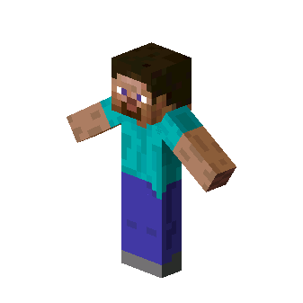
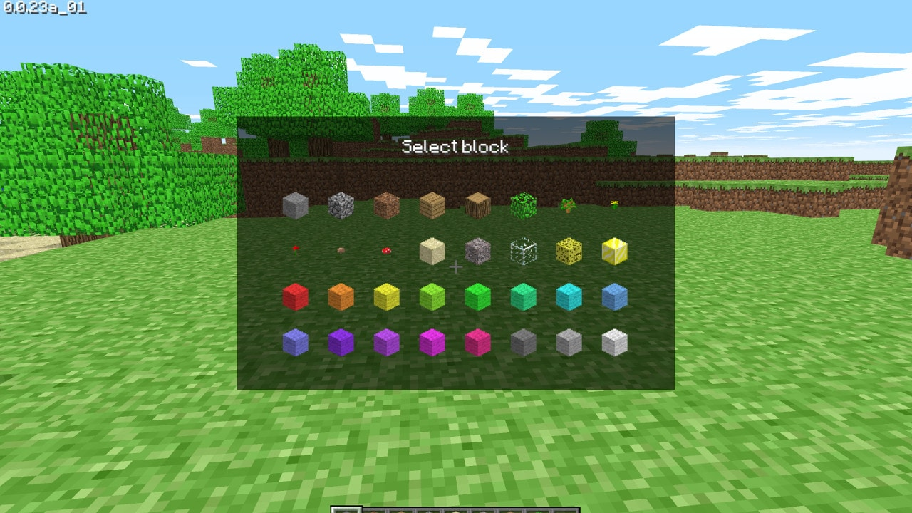
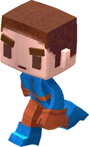

VERSOES DO MINECRAFT JAVA EDITION
Minecraft: Edição Java está em constante desenvolvimento desde 10 de maio de 2009. Conheça neste artigo cada uma de suas versões e como o jogo evoluiu com o passar do tempo
Versão Pre-Classic
Pre-Classic foi a fase inicial de desenvolvimento do Minecraft, na qual a mecânica e os elementos básicos do jogo foram desenvolvidos, testados e aprimorados no período de menos de uma semana - de 10 a 16 de maio de 2009. Não era originalmente liberado ao público, mas algumas versões agora podem ser reproduzidas pelo launcher.
Versão Classic
Edição Java Classic foi a primeira fase de desenvolvimento longa do jogo, na qual foi constantemente aprimorada e atualizada ao longo de vários meses. Ocorreu entre 16 de maio e 23 de dezembro de 2009. O modo de jogo original era Criativo, mas em 1º de setembro de 2009 começou o desenvolvimento do modo Sobrevivência sob o nome de Survival Test.
Versão Indev
A fase de desenvolvimento do Indev começou em 23 de dezembro de 2009 e terminou em 27 de fevereiro de 2010. Foi o sucessor do Survival Test anterior e continuou expandindo os aspectos de sobrevivência do jogo, tornando-o bastante mais como a jogabilidade atual. As versões nesse estágio não eram numeradas ou usavam o mesmo número.
Versão Infdev
A fase de desenvolvimento do Infdev começou em 27 de fevereiro de 2010 e terminou em 30 de junho de 2010. Durante esse estágio, Minecraft estava disponível apenas no modo single-player Sobrevivência e as versões não eram numeradas sob o nome Minecraft Infdev. Neste ponto, Notch reescreveu o código do jogo para permitir terrenos principalmente "infinitos".